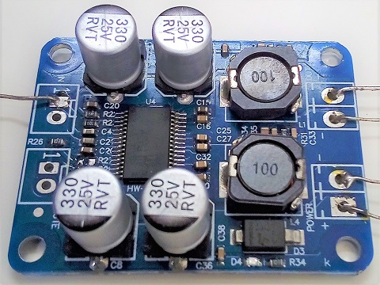
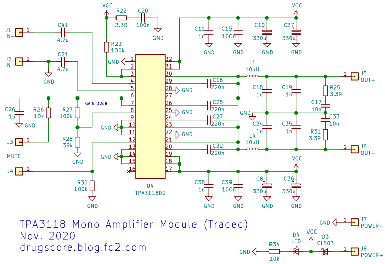
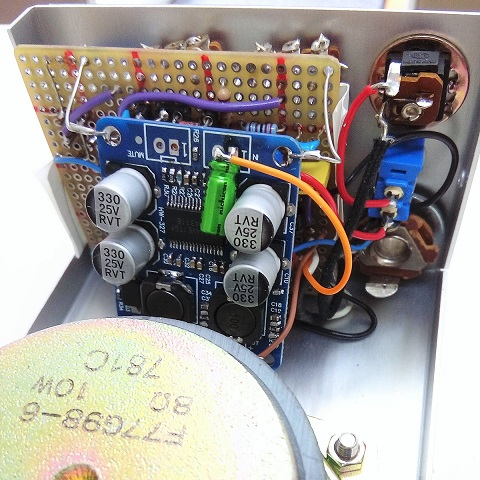

TPA3118モノラルパワーアンプモジュール解析
2021年07月24日 カテゴリー：ギターアンプ・ベースアンプ

AliExpress等で格安で販売されているパワーアンプモジュール基板を解析してみました。TPA3118というD級パワーアンプICが搭載されています（本物かどうかは不明）。このICはVOX MV50に使われているようです。放熱がうまくできれば50Wのパワーアンプなんてのも自作できるかもしれません。
【参考ページ】
・Texas Instruments TPA3118D2
・Texas Instruments TPA3110D2 評価モジュール
▽回路図

コンデンサはいったん取り外して値を確認しました。結線は全て確認したわけではありませんが、データシート通りと考えて大丈夫でしょう。※R22、C20は電源投入時の発振防止用のようです（2023年1月28日追記）。
ゲイン設定を変える場合は下の表の通りになります。
| ゲイン | R28 | R27 | 入力インピーダンス |
| 20dB | 5.6kΩ | なし | 60kΩ |
| 26dB | 20kΩ | 100kΩ | 30kΩ |
| 32dB | 39kΩ | 100kΩ | 15kΩ |
| 36dB | 47kΩ | 75kΩ | 9kΩ |
だいぶ雑ですがNJM2073ギターアンプのパワーアンプ部分をこのモジュール（ゲイン設定36dB）に置き換えました。公式評価モジュールで積層セラミックコンデンサが使われていますので、コンデンサの交換はあまり意味がなさそうです。一応入力のコンデンサだけ10uFのものを取り付けています。音質変化はよくわかりませんが、歪まずに大きな音量が出せるようなったように思います。
